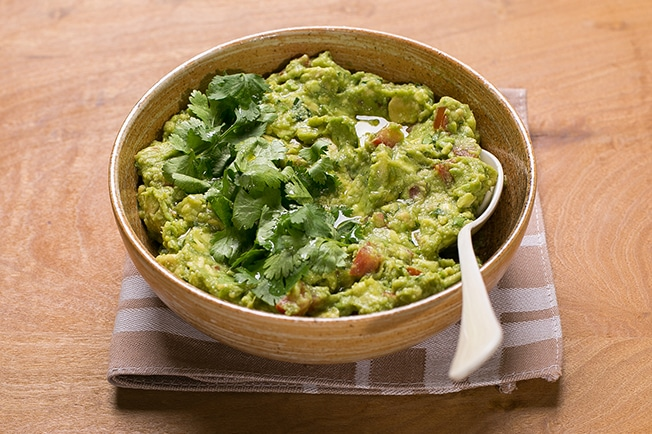
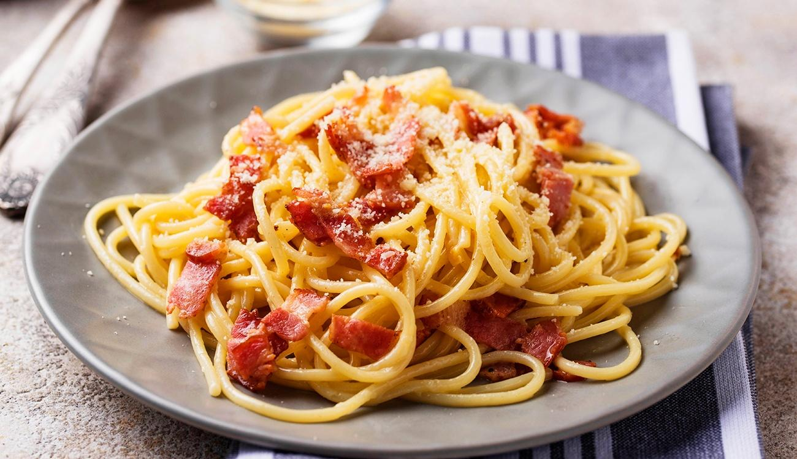

Guacamole
Guacamole é um prato tradicional da culinária mexicana, sendo muitas vezes servido como um acompanhamento para nachos, tacos ou burritos. Guacamole também é usado como ingrediente em sanduíches e saladas. É conhecido por ser uma fonte de gorduras saudáveis e nutrientes importantes, como o ácido fólico e a vitamina E. Além disso, o guacamole é uma opção vegana e sem glúten.
Ingredientes:
- 1 Abacate brasileiro médio (ou 4 avocados).
- 1 Cebola pequena.
- 1 Maço de coentro.
- 1 Tomate grande sem sementes.
- 2 Dentes de alho bem picados.
- 1 Pimenta malagueta sem sementes.
- Azeite extra virgem.
- Suco de 1 limão grande.
- Sal.
Preparo:
- Amasse o abacate com um garfo, acrescente o alho socado, o suco de limão, sal e azeite a gosto e misture como um purê.
- Pique a cebola, o tomate e o coentro. Pique bem a pimenta.
- Acrescente os ingredientes picados ao "purê" de abacate.
- Sirva com chips, crackers, tacos, no burrito ou mesmo junto com arroz e feijão.
Carbonara
Carbonara é um prato de massa originário da culinária italiana, mais especificamente da região de Lácio. É um prato muito popular em todo o mundo e tem muitas variações em diferentes países.
Ingredientes:
- Bacon picado.
- 3 Ovos.
- Pimenta-do-reino.
- Creme de leite.
- Queijo ralado.
- Sal.
- Macarrão de sua escolha.
Preparo:
- Frite bem o bacon, até ficar crocante (pode-se adicionar salame picado).
- Coloque o macarrão para cozinhar em água e sal.
- No refratário onde será servido o macarrão, bata bem os ovos com um garfo.
- Tempere com sal e pimenta a gosto, e junte o queijo ralado, também a gosto.
- Quando o macarrão estiver pronto, escorra e coloque (bem quente) sobre a mistura de ovos, misture bem.
- O calor da massa cozinha os ovos.
- Coloque o bacon, ainda quente, sobre o macarrão e sirva.
Brigadeirão

Brigadeirão é uma sobremesa brasileira que se assemelha a um pudim de chocolate. Geralmente é servida gelada e pode ser decorada com raspas de chocolate, calda de chocolate ou frutas frescas.
- 1 Caixa de leite condensado.
- 1 Lata de creme de leite.
- 1 Xícara de chá de chocolate em pó.
- 4 Colheres de sopa de açucar.
- 1 Colher de sopa de manteiga.
Preparo:
- Unte uma forma de pudim de 19 cm de diâmetro com manteiga.
- Bata todos os ingredientes no liquidificador até obter uma mistura homogênea.
- Despeje o creme na forma e asse em forno preaquecido a 180°C por 1 hora em banho-maria (posicione a forma dentro de outra maior, coberta com água morna).
- Retire o brigadeirão do forno e deixe amornar.
- Em seguida, desenforme e decore com bastante granulado.
- Leve à geladeira e sirva gelado.